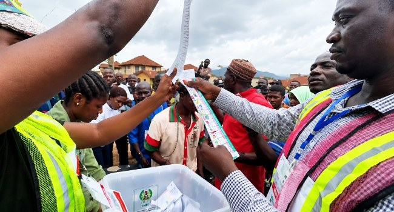

Nigeria 2027 Election Watch: The Battle For The Ballot Deepens As Parties Lose Candidates, Gain Defectors And Confront The Courts

Political parties preparing for Nigeria’s 2027 elections face a mix of defections, candidate changes and unresolved legal disputes. Recent developments in Sokoto, Kano, Cross River and Ogun highlight pressures on party organisation and nominations, while findings from the National Peace Committee raise concerns about the conditions for campaigning and participation.
In Sokoto, a state government statement issued on November 10 reported that PDP and ADC officials and organisers had joined the APC. The reported defectors included state executive officials and local party chairmen. Some accounts put the number of departing PDP local-government chairmen at seven, although six are clearly identified in published names. They are party officials, not elected council chairmen. The defections may affect local party structures, but do not establish that voters will follow them.
In Kano, a letter dated November 9 announced a six-month caretaker committee for the ADC, led by Musa Ungogo. The appointment comes amid earlier state-level disagreements and a national leadership dispute. On November 5, the Federal High Court invalidated decisions by the David Mark-led national executive, including the process that produced Atiku Abubakar as the party’s presidential candidate. The ADC has appealed and sought a stay of execution; neither an appellate reversal nor a granted stay has been confirmed. ADC candidates have also petitioned international missions and organisations over the judgment and delays in obtaining a certified copy. Their petition does not change the court ruling or establish that every candidate has been excluded from the ballot. The party’s nominations and INEC’s response remain matters of legal uncertainty.
In Cross River, NDC deputy governorship candidate Stella Charles Archibong withdrew from the ticket and declared support for Governor Bassey Otu’s re-election campaign through the Back to South Movement. NDC candidate John Odey said consultations were continuing. No replacement has been independently verified on INEC’s published list. In Ogun, a Federal High Court judgment scheduled for Friday, November 13, is expected to address PDP candidate Ladi Adebutu’s exclusion from INEC’s governorship list. INEC says his name was not on the party membership register it originally submitted; Adebutu and the PDP dispute the basis for his exclusion. Those are competing claims before the court, not judicial findings.
The National Peace Committee recorded 109 reported breaches of the electoral Peace Accord from August 19 to October 27, across 26 states and the Federal Capital Territory. The findings include 33 reported incidents involving violence or political thuggery and 29 involving misinformation. They cover more than two months, not a single day. Together, the developments concern distinct issues: party organisation, nomination continuity, legal eligibility and the safety of political participation. None by itself demonstrates a shift in voter preferences, but resolving disputes and addressing threats to free participation will be important to public confidence in the process.
Source: Channels TV